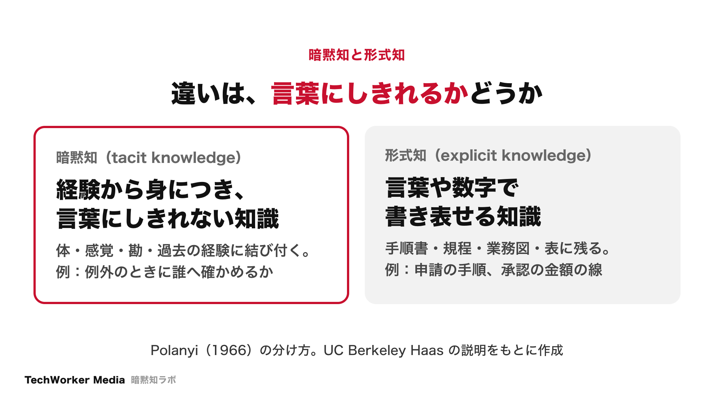
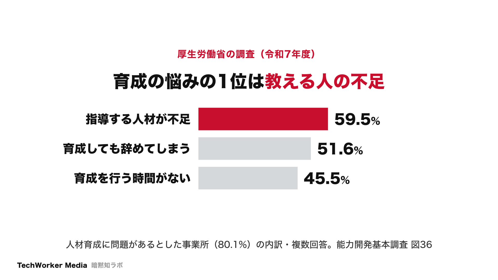
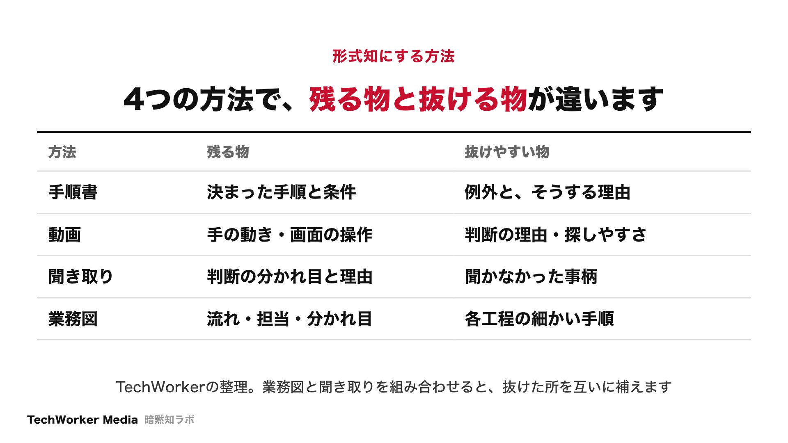
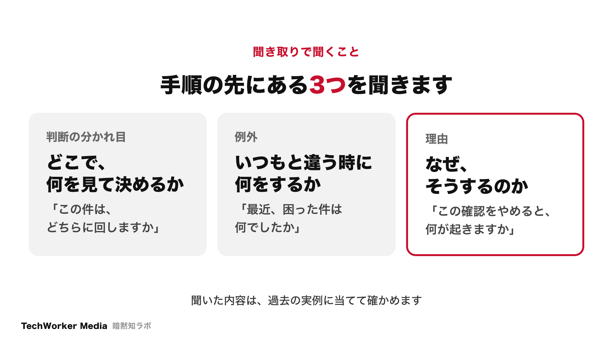

暗黙知（tacit knowledge）は、経験から身につき、言葉にしきれない知識です。手順書に書かれていない判断の基準や、例外のときの動き方がこれに当たります。
- 言葉の出どころ：哲学者マイケル・ポランニーが1966年の著書『The Tacit Dimension』で論じました。
- 形式知との違い：形式知は言葉や数字で書き表せる知識です。違いは言葉にしきれるかどうかにあります。
- 業務での残し方：判断の分かれ目・例外・理由の3つを聞き取り、過去の実例に当てて確かめるのが基本です。
原典の紹介ページと公的な調査（2026年11月23日確認）をもとに、形式知にする方法の違いと、聞き取りで残す手順をまとめます。
暗黙知とは、何ですか？
経験から身につき、言葉にしきれない知識です。ポランニーは、人は語れる以上のことを知っている、という事実から知識を考え直しました。
原文“I shall reconsider human knowledge by starting from the fact that we can know more than we can tell”
日本語訳人の知識を考え直すにあたり、私たちは語れる以上のことを知っている、という事実から始めたい。
『The Tacit Dimension』は1966年にDoubledayから出た本です。今の版は、シカゴ大学出版局が出した2009年の版（128ページ）です。
カリフォルニア大学バークレー校のビジネススクール（Haas）は、ポランニーの分け方を次のように紹介しています。
原文“explicit knowledge,” which can be captured in language and figures, and “tacit knowledge,” which is tied to the body, senses, intuition, and past experiences.
日本語訳言葉や数字でとらえられる形式知と、体・感覚・直感・過去の経験に結び付いた暗黙知。

職場に置き換えると、値引きをどこまで認めるか、どの問い合わせを上長に回すか、といった判断が暗黙知に当たります。担当者は迷わずに決めていても、理由を聞かれるとすぐには言葉になりません。
形式知との違いと、SECIモデルとは何ですか？
形式知は言葉や数字で書き表せる知識で、手順書や規程に残ります。SECIモデルは、暗黙知と形式知を行き来しながら組織の知識が増える流れを、4つの段階で示した考え方です。
考えたのは、野中郁次郎氏と竹内弘高氏です。2人は1995年に、オックスフォード大学出版局から『The Knowledge-Creating Company』を出しました。出版社の紹介はこの本の中身を次のように書いています。
原文“[…] this book reveals how Japanese companies translate tacit to explicit knowledge and use it to produce new processes, products, and services”
日本語訳（前略）この本は、日本の企業が暗黙知を形式知に移し、それを使って新しい工程や製品、サービスを生み出す方法を明らかにします。
4つの段階は共同化（Socialization）、表出化（Externalization）、連結化（Combination）、内面化（Internalization）です。英語の頭文字からSECIと呼ばれます。Haasの紹介によると、2人はこの流れを、知識が会社の外と中を動いていくらせんとして描きました。日本語の版は『知識創造企業』で、2020年に東洋経済新報社から新装版が出ています。
Haasは、2人が1991年にハーバード・ビジネス・レビューに書いた論文の例も紹介しています。松下電器のホームベーカリーの開発では、数か月かけて分析しても、機械で生地をうまくこねられませんでした。設計者の1人が熟練のパン職人のこね方を観察し、数式のモデルに移して解決しました。
言葉にならないこね方を、観察して形のある物に移した例です。業務の暗黙知を残す仕事も、同じ移し方をします。
なぜ今、暗黙知を残す必要があるのですか？
教える人と教える時間が足りないためです。厚生労働省の令和7年度の調査では、人材育成に問題がある事業所の59.5%が、指導する人材の不足を挙げました。
厚生労働省は2026年7月31日に、令和7年度「能力開発基本調査」の結果を公表しました。常用労働者30人以上の事業所が対象で、7,194事業所に配り、有効回答率は54.2%です。
能力開発や人材育成に、何らかの問題があるとした事業所は80.1%でした。問題点の内訳（複数回答）の上位3つは次のとおりです。
| 人材育成の問題点 | 割合 |
|---|---|
| 指導する人材が不足している | 59.5% |
| 人材を育成しても辞めてしまう | 51.6% |
| 人材育成を行う時間がない | 45.5% |
出典：厚生労働省「令和７年度 能力開発基本調査 調査結果の概要」p.24 図36。人材育成に問題があるとした事業所（80.1%）に占める割合（2026年11月23日確認）

教える人が足りず、育てても辞めてしまう職場では、隣で見て覚える教え方が回りにくくなります。担当者の頭の中にある判断は、本人がいるうちに書き残す必要があります。
同じ調査では、技能継承に取り組む事業所のうち、退職予定者のノウハウなどを文書化やマニュアル化している所は22.0%でした（p.42 図64）。技能伝承の数字は技術承継・技能伝承とAIにまとめています。
暗黙知を形式知にする方法は、何がありますか？
主な方法は手順書・動画・聞き取り・業務図の4つです。残る物と抜けやすい物が違うので、業務図と聞き取りを組み合わせると抜けを補えます。
| 方法 | 残る物 | 抜けやすい物 | 向く仕事 |
|---|---|---|---|
| 手順書 | 決まった手順と条件 | 例外と、そうする理由 | 毎回ほぼ同じ手順の仕事 |
| 動画 | 手の動き・画面の操作 | 判断の理由、あとで探すこと | 機械や画面の操作 |
| 聞き取り | 判断の分かれ目と理由 | 聞かなかった事柄、話す人の思い込み | 判断の多い仕事 |
| 業務図 | 流れ・担当・分かれ目 | 各工程の細かい手順 | 人や部署をまたぐ仕事 |
TechWorkerの整理。業務図は、部署の仕事の流れと担当、判断の分かれ目を1枚に描いた図です

手順書はよく使われる方法ですが、例外とその理由が抜けやすくなります。業務図で流れと分かれ目を1枚にし、分かれ目ごとに聞き取りで理由を足すと、手順書だけでは抜ける所が埋まります。
どの方法を使っても、全部を書き切ることはできません。シカゴ大学出版局の紹介ページには、ポランニーの考えでは知識は完全には形式にできない、という評者の言葉も載っています。判断に効く所から順に残すのが現実的です。
部署の仕事を業務図に起こすときの雛形は、下の枠から受け取れます。
業務の暗黙知を聞き取るとき、何を聞きますか？
判断の分かれ目、例外、なぜそうするかの3つです。手順は手元の資料から読み取り、聞き取りの時間はこの3つに使います。

| 聞くこと | 質問の例 | 残す形 |
|---|---|---|
| 判断の分かれ目 | この件は、どちらに回しますか。何を見て決めましたか | 業務図の分かれ目に、条件を書く |
| 例外 | 最近、困った件は何でしたか。そのとき誰に確かめましたか | 例外の一覧に、件と対応を書く |
| 理由 | この確認をやめると、何が起きますか | 手順の横に、理由を1行で書く |
TechWorkerの整理。質問の例は聞く内容を表すための一例です
「普段どうしていますか」と聞くと、いつもの手順の説明で時間が終わりがちです。具体的な件をたずねると、判断に使った材料が出てきます。理由を聞くときは、その手順をやめたときに起きることをたずねると答えやすくなります。
聞き取りで残す手順はどう進めますか？
業務を1つ決め、資料から下書きを作り、3つを聞き、過去の実例で確かめ、ほかの人が読んで直す、の5つの順で進めます。
- 業務を1つ決める：異動や退職の予定がある担当者の仕事から、1つを選びます。部署全体を一度に扱うと、聞き取りが浅くなるためです。
- 資料から下書きを作る：手順書、帳票、過去のメールなど、手元の資料から流れの下書きを作ります。手順は、聞く前に分かっている状態が理想です。
- 3つを聞く：下書きを見せながら、分かれ目・例外・理由を聞きます。話す人の了承を得たうえでの録音と書き起こしは、聞き漏らしを後から確かめる材料です。
- 過去の実例で確かめる：直近の実例を選び、書いた条件どおりに判断すると同じ結果になるかを見ます。合わない件は聞き漏らしか例外です。
- ほかの人が読んで直す：担当者以外の人が読み、同じ判断ができるかを試します。読んで分からない所を、本人に聞き直します。
TechWorkerのギョウムズAIは、この手順の2〜4をAIと組み合わせて進める例です。公式ページによると、担当者への聞き取り、手元の資料、業務の記録の3つから、AIが部署の仕事の流れを1枚の業務図にします。14日間の初期診断では、資料から業務図の下書きを作り、判断と例外に絞った8つの質問で確かめる流れです。社内の負担は質問票に1時間、確認会に2時間の計3時間以内です。AIに工程を任せる前には過去の実例30件で確かめ、すべて正しく出力できた工程から任せるとしています。
AIに任せる所と、人が決める所はどこですか？
質問の用意、書き起こし、下書きの整理はAIに任せられます。何を正しい判断とするか、例外をどう扱うかは、担当者と上長が決めます。
| 場面 | AIに任せる | 人が決める |
|---|---|---|
| 聞く前 | 資料を読み、流れの下書きと質問の案を作る | どの業務から残すか |
| 聞くとき | 答えの書き起こし、答えに合わせた次の質問の案 | 答えが合っているか（話した本人が確かめる） |
| 聞いた後 | 業務図や手順書の形に整え、食い違いを並べる | 食い違ったとき、どちらを正とするか |
| 使うとき | 書いた判断の基準に沿って、下書きを作る | 最後の判断と、社外に出す前の確認 |
TechWorkerの整理
AIは、書かれた物をもとに答えを作ります。理由が書かれていない判断は、AIに任せても同じようには再現できません。暗黙知を書き残す仕事はAIに業務を任せる前の準備にもなります。
ギョウムズAIの公式ページも、社外への送信や登録の確定など人が承認する工程を先に決め、止める条件に当たる件は人に回すと書いています。
書き残した記録をAIが答える前に読む仕組みは、Company Brain（会社の記憶）とはで説明しました。AIに仕事を任せられる状態の条件は、AI Readyとはにまとめました。1人しかできない仕事を担当者以外でも回せるようにし、引き継げたかを過去の実例で確かめる手順は、業務の属人化を解消する方法で扱っています。
よくある質問
tacit knowledgeです。形式知はexplicit knowledgeと呼ばれます。カリフォルニア大学バークレー校のHaasは、この2つをポランニーの分け方として紹介しています。
できません。シカゴ大学出版局の紹介ページに載る評者の言葉も、知識は完全には形式にできないとしています。判断に効く所から順に残し、残しきれない所は担当者が隣で教える時間を取ります。
手順書には決まった手順が残りますが、例外とそうする理由が抜けやすいためです。分かれ目と例外を聞き取り、手順の横に理由を書き足すと、ほかの人も同じ判断ができるようになります。
業務の量によるため、決まった時間はありません。ギョウムズAIの初期診断は社内の負担を質問票に1時間、確認会に2時間の計3時間以内としています。聞く前に資料から手順を読んでおくと、聞く時間を判断と例外に使えます。
例外と判断の分かれ目から残します。直近の実例を担当者と一緒に見て、迷った件や上長に確かめた件を先に聞きます。決まった手順を資料から起こすのは、後でかまいません。
質問の用意、書き起こし、下書きの整理は任せられます。答えが正しいか、どちらの判断を正とするかは、担当者と上長が確かめます。録音や書き起こしの前に、話す人の了承を得てください。
今週、何から始めればよいですか？
異動や退職の予定がある担当者の仕事を1つ選び、直近の実例を一緒に見ることが最初の一歩です。
- 対象の業務を1つ決め、手順書や帳票など手元の資料を集めます。
- 担当者と30分の時間を取り、直近の実例を見ながら、分かれ目・例外・理由を聞いてください。
- 書いた内容を別の人が読み、同じ判断ができるかを確かめます。
部署別の業務図の雛形と、AIに任せる工程の見つけ方は、下の枠から受け取れます。
出典と確認範囲
確認日：2026年11月23日。書籍は、出版社と大学の紹介ページ、大学図書館の目録で書誌と要旨を確かめました。原典の本文は読んでいません。ポランニーの一文は出版社の紹介ページに引かれた物で、原典のページ番号は確かめていません。SECIモデルの4つの段階の日本語の名前は、東洋経済オンラインに載った続編の書評によります。形式知にする方法の表、聞く3つの表、AIと人の分け方は、TechWorkerの整理です。
- The University of Chicago Press「The Tacit Dimension」Michael Polanyi（With a New Foreword by Amartya Sen、2009年5月、128ページ、ISBN 9780226672984）
- Texas A&M University Libraries の目録「The tacit dimension」（Garden City, N.Y.: Doubleday, 1966、Terry lectures）
- Oxford University Press「The Knowledge-Creating Company」Ikujiro Nonaka, Hirotaka Takeuchi（1995年9月7日、304ページ、ISBN 9780195092691）
- UC Berkeley Haas「The Alchemist of Innovation Management」（Haas News、2017年秋号）
- 東洋経済オンライン「『ワイズカンパニー 知識創造から知識実践への新しいモデル』知識創造から｢知恵｣へ、人間中心経営への進化」（書評、2020年10月23日）
- 版元ドットコム「知識創造企業（新装版）」野中郁次郎・竹内弘高 著、梅本勝博 訳（東洋経済新報社、2020年12月4日発売）
- 厚生労働省「令和７年度『能力開発基本調査』の結果を公表します」（2026年7月31日）
- 厚生労働省「令和７年度 能力開発基本調査 調査結果の概要」（参考1）p.24 図35・図36、p.42 図64
- TechWorker「ギョウムズAI」